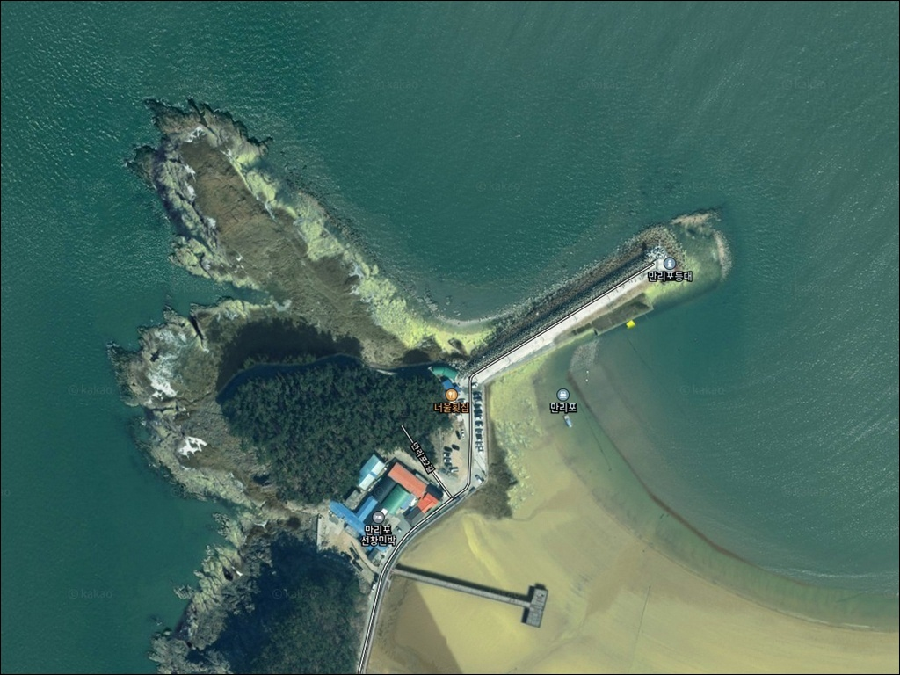
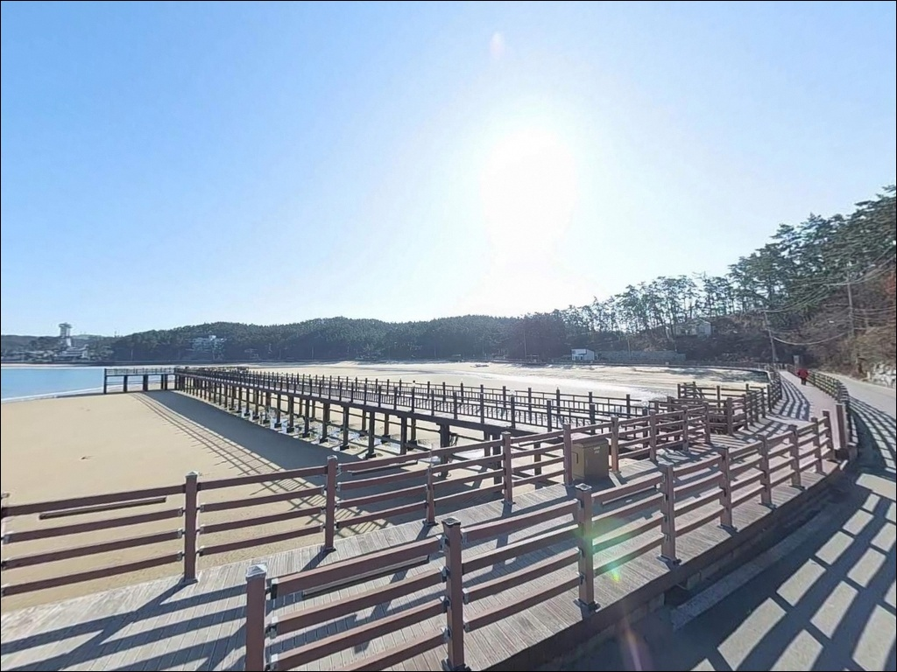
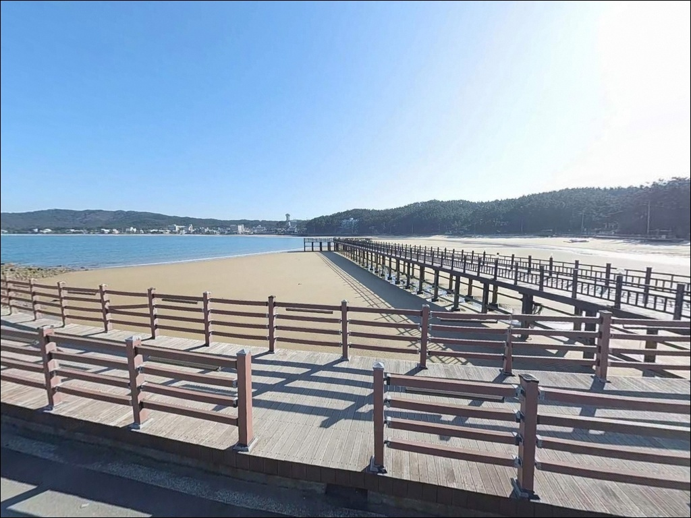
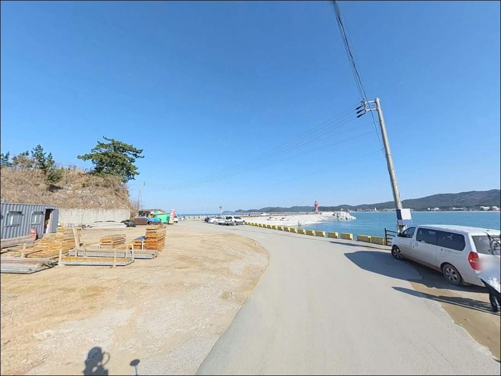
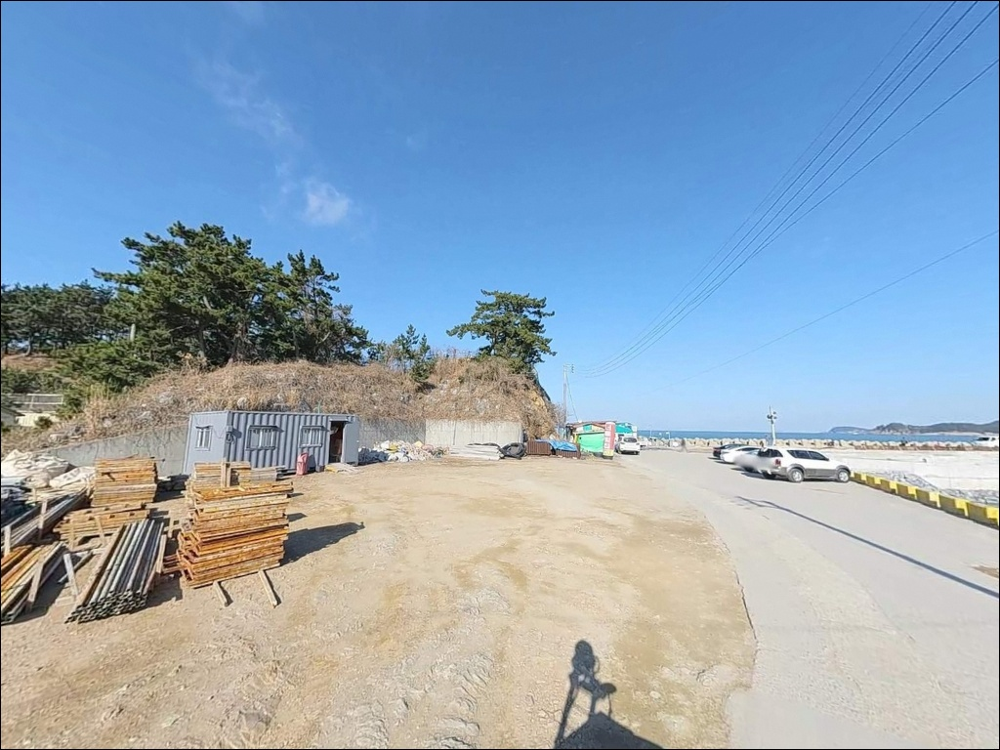
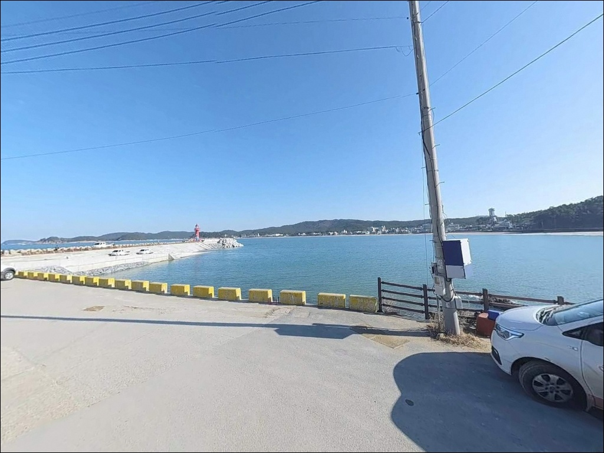
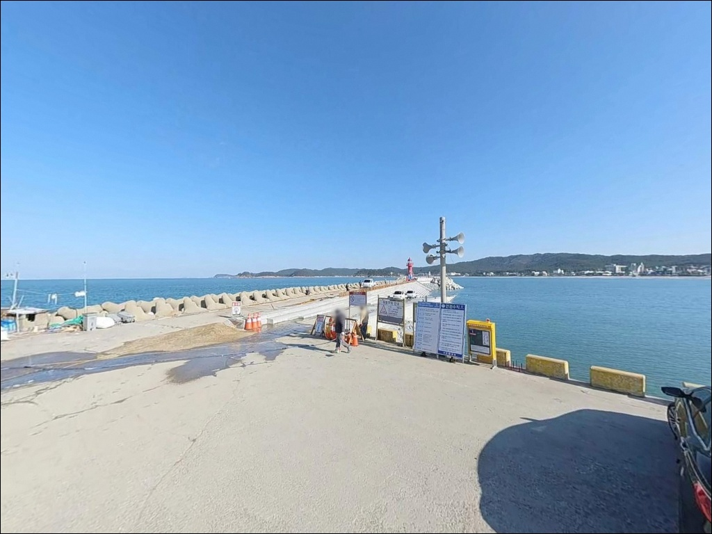
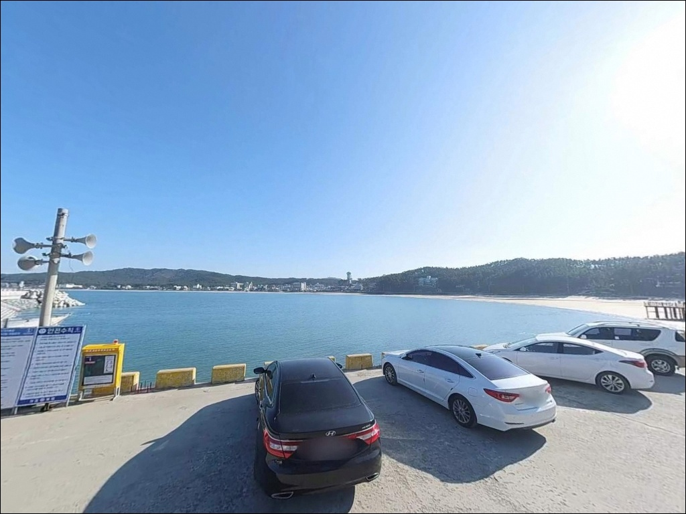
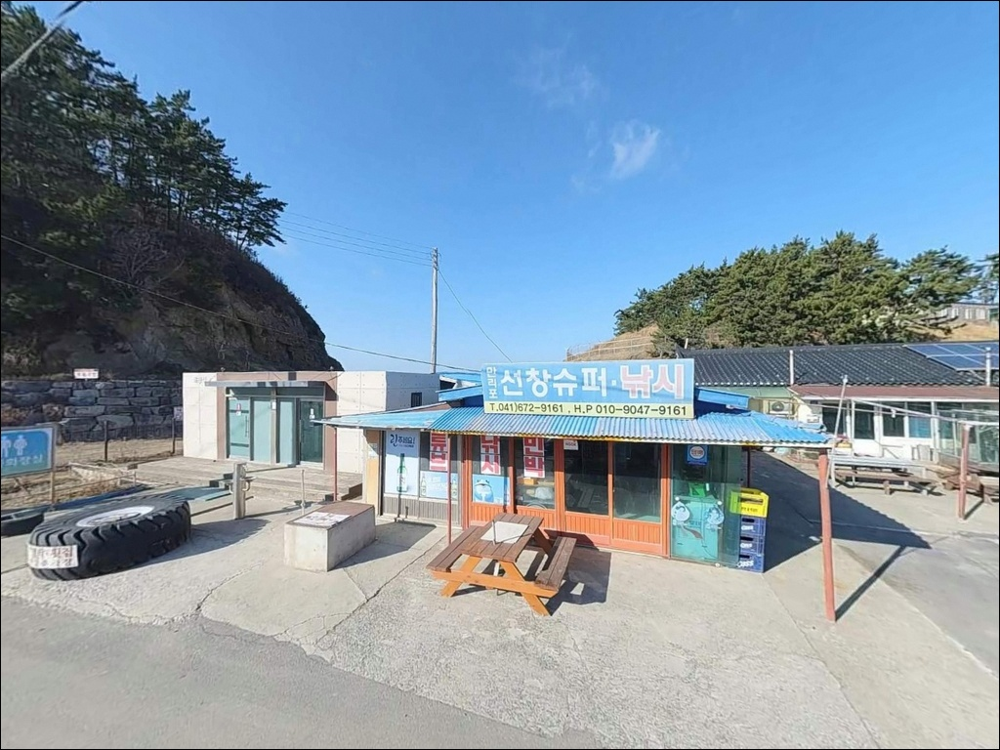

이 페이지에는 광고(제휴 링크 포함)가 있으며, 광고 링크를 통해 구매하면 운영자가 판매 수익 또는 수수료를 받을 수 있습니다. 포인트 사진: 카카오맵 스카이뷰·로드뷰. 이 페이지의 지도·사진 이미지는 카카오맵의 실제 서비스 이미지와 다를 수 있습니다.

만리포
충남 태안군 소원면 모항리 1324-38
만리포 방파제 원투 자리를 잡고 갔다가
채비가 갯벌 바닥만 긁고 나오는 상황,
서해 물때를 계산하지 않고 출발했을 때
흔히 겪는 패턴입니다.
간조 전후 두 시간 안팎은 갯벌이 넓게 드러나
어떤 채비를 써도 효과가 크게 떨어지며,
성수기라면 주차 공간 확보 실패까지
겹칠 수 있습니다.
이 글은 만리포 방파제와 갯바위·백사장의
낚시 방식별 여건, 물때 판단 기준,
차박 가능 조건과 국립공원 제한 사항을
중심으로 정리합니다.
조황 단정이나 특정 어종 보장은
이 글의 범위에 포함되지 않습니다.
충남 태안군 소원면에 위치한 만리포는
약 2.5km의 완만한 백사장과
남쪽 끝단의 방파제, 인접한 갯바위 구간을
함께 품고 있는 복합 포인트입니다.
접근성이 뛰어나고 인근 편의시설도 잘 갖춰진 편이지만,
물때와 계절에 따라 낚시 여건 편차가 크다는 점을
방문 전에 먼저 이해해야 합니다.

서해안고속도로 서산 IC에서 태안 방면으로
32번 국도를 따라 진입하면
만리포 해수욕장까지 포장도로로 이어집니다.
해수욕장 앞 도로는 상가와 숙박시설이 밀집한
왕복 2차로 구조로,
성수기 주말에는 차량 정체와 주차 혼잡이
발생하는 편입니다.
방파제 직하까지의 진입은
해수욕장 남쪽 끝을 따라 들어가는 구조이며,
도로 폭이 좁아지는 구간이 있습니다.
대형 차량은 진입 전 도로 여건을
위성지도로 먼저 확인하는 편이 좋으며,
해수욕장 공영주차장을 기점으로
도보 접근을 병행하는 방식이 현실적입니다.
방파제 인근 소규모 공터에서 주차 후 진입하는
방식도 가능하지만,
어선 조업 동선과 겹치지 않도록
자리를 잡는 것이 기본 매너입니다.

만리포는 해수욕장 배후로 숙박시설과 상가가
밀집한 관광지 구조입니다.
해변과 인접한 공영주차장에서 야간 체류하는 방식이
일반적으로 활용되지만,
프라이버시 여건은 낮은 편이며
성수기에는 주변 유동 인구가 많습니다.
만리포는 태안해안국립공원 구역 내에 포함됩니다.
국립공원 내 지정 장소 외 야영·취사는
원칙적으로 허용되지 않으며,
매년 성수기에 일부 해변에 한해
한시적 허용 구역이 공고됩니다.
만리포가 해당 연도 허용 구역에 포함되는지는
태안해안국립공원사무소 공고를
출발 전 확인하는 것이 먼저입니다.
방파제 쪽으로 이동할수록 상가 조명과
인적 통행이 줄어들어 야간 분위기는 다소 차분해집니다.
다만 외항에 노출된 지형 특성상 바람 영향을 받을 수 있어,
체류 전 풍향과 풍속 확인은 기본입니다.

만리포 해수욕장 인근은 태안 서해안 권역에서
편의시설 접근성이 좋은 편에 속합니다.
해수욕장 입구와 상가 밀집 구역에
편의점과 식당이 있으며,
모항리 일대에는 횟집과 수산물 판매점이 운영 중입니다.
다만 구체적인 운영 시간과 비성수기 영업 여부는
출발 전 현지 확인이 필요합니다.
반경 3km 이내에 천리포 방향으로도
카페와 숙소가 분포하고 있어
동행자가 있는 출조 시 활용하기 좋은 편입니다.
비상시 의료기관은 태안읍 방면으로 이동해야 하므로
출조 전 비상약품과 기본 응급 준비를
갖추는 것이 기본입니다.

만리포 출조 전 가장 먼저 확인할 것은 물때입니다.
서해는 조차가 크기 때문에
간조 전후 시간대에는 갯벌이 넓게 드러나
방파제 원투 채비가 제대로 기능하지 못하는
상황이 생길 수 있습니다.
바다타임에서 만리포 기준 물때를 확인하고,
만조 전후 2시간을 중심으로
출조 계획을 세우는 것이 기본 전략입니다.
성수기(7~8월)에는 해수욕장 운영으로
낚시 가능 구간이 제한될 수 있습니다.
방파제 구간 낚시는 가능하지만
해수욕장 백사장 구간은 이용객과의 공간 배려가 필요하며,
비수기 방문이라면 백사장 원투 구간까지
여유롭게 활용하기 좋은 편입니다.
갯바위 구간은 간조 시에만 접근 가능하며,
만조 복귀 타이밍을 반드시 계산해두어야 합니다.
구명조끼는 방파제와 갯바위 전 구간에서 착용 기본이며,
야간 낚시 시에는 헤드랜턴과
미끄럼 방지 신발을 반드시 준비해야 합니다.

만리포의 낚시 환경은 크게 세 구간으로 나뉩니다.
약 2.5km에 걸친 완만한 모래 해변은
백사장 원투 구간이 되고,
해수욕장 남쪽 끝단에는 방파제와 테트라포드가
형성되어 있으며,
그 인근으로 간조 시 접근 가능한
갯바위 구간이 이어지는 구조입니다.
방파제 내항 쪽은 비교적 잔잔한 수면 조건을
유지하는 편이고,
외항 쪽은 조류와 파도 영향을 직접 받는 구조입니다.
방파제 끝단에서 외항 쪽으로 던지는 원투 자리는
간조보다 만조 전후에 조과 여건이 좋아지는 편입니다.
이 차이가 같은 방파제에서도
물때에 따라 결과가 달라지는 이유입니다.
백사장 중앙 구간은 수심이 완만하게 깊어지는
전형적인 모래 해변 지형으로,
장타 원투를 중심으로 운용하는 구간입니다.
봄에는 도다리·가자미 계열,
여름에는 광어·우럭 계열,
여름 야간에는 붕장어 계열이
이 해역에서 기대해 볼 수 있는 어종으로 언급됩니다.
최신 조황은 출조 전 반드시 검색해보시기 바랍니다.

원투낚시는 이 포인트에서 가장 많이 활용되는 방식입니다.
방파제 상단에서 외항 방향으로 장타를 날리는 것이 기본이며,
비수기라면 백사장 중앙에서도
200m 안팎의 장타 원투가 가능한 구간이 됩니다.
봄에는 도다리·가자미 계열,
여름 야간에는 붕장어 계열을
기대해 볼 수 있는 시즌 패턴이
이 해역에서 반복됩니다.
갯바위 워킹 루어는 간조 전후
탐색 구간이 넓어지는 타이밍에 시도하기 좋은 방식입니다.
수중 암반이 분포하는 갯바위 주변은
광어·우럭·노래미 계열이 기대해 볼 수 있는
지형 조건을 갖추고 있습니다.
갯바위 이동 시 만조 복귀 시각은 반드시 계산해두어야 하며,
혼자 진입하지 않는 것이 기본입니다.
방파제 내항 쪽은 잔잔한 수면 조건이 유지되는 편이라
조류를 흘리는 찌낚시가 가능한 구간입니다.
가을 시즌에는 방파제 주변에서
갑오징어·주꾸미 계열 에깅도 시도해볼 수 있으며,
학꽁치나 고등어 계열은
만조 찌낚시 타이밍에 기대해볼 수 있는 어종입니다.

만리포에서 파도가 강하거나
성수기 혼잡으로 낚시 공간 확보가 어려울 때는
같은 해안선의 천리포 방파제가 첫 번째 대안입니다.
만리포에서 북쪽으로 가까운 거리에 있으며,
내항이 비교적 잔잔한 구조여서
다른 스타일의 낚시 환경을 원할 때 활용하기 좋습니다.
모항항은 만리포 남쪽으로 약 2km 거리에 위치한 포구로,
방파제와 부두 주변에 원투·루어 낚시가
가능한 구간이 있습니다.
만리포보다 인적이 적은 편이라
혼잡한 날에는 현실적인 이동 선택지가 됩니다.
수산물 직판장도 인근에 있어
출조 전후 활용하기 좋습니다.
차박 여건이 만리포보다 조용한 곳을 원한다면
파도리 방향 해변 공간을 검토해볼 수 있습니다.
다만 이 방면도 국립공원 구역 적용 여부를
이동 전에 먼저 확인하는 것이 순서입니다.

원투낚시를 즐기는 낚시인이라면
만리포의 백사장과 방파제 원투 구간은
비수기 기준으로 조건이 잘 맞습니다.
서해 물때 계산에 익숙하고
간조·만조 타이밍에 맞춰 자리를 고를 줄 안다면,
방파제 끝단 원투와 갯바위 루어를 병행하는 방식으로
다양하게 운용할 수 있는 포인트입니다.
반면 조용한 분위기에서
프라이버시 있는 낚시를 원하는 분이라면
성수기는 피하는 편이 낫습니다.
여름 주말은 해수욕장 이용객과 낚시 공간이 겹쳐
여유롭게 움직이기 어려운 편이며,
비수기 평일 방문이 가장 효율적인 타이밍입니다.
물때를 갖추고 국립공원 야영 확인을 마쳤다면,
방파제 옆에 차를 세우고 밤낚시를 마친 뒤
공영주차장에서 하룻밤 머무는 출조는
낚시와 차박을 동시에 즐기기 좋은
만리포만의 방식이 될 수 있습니다.